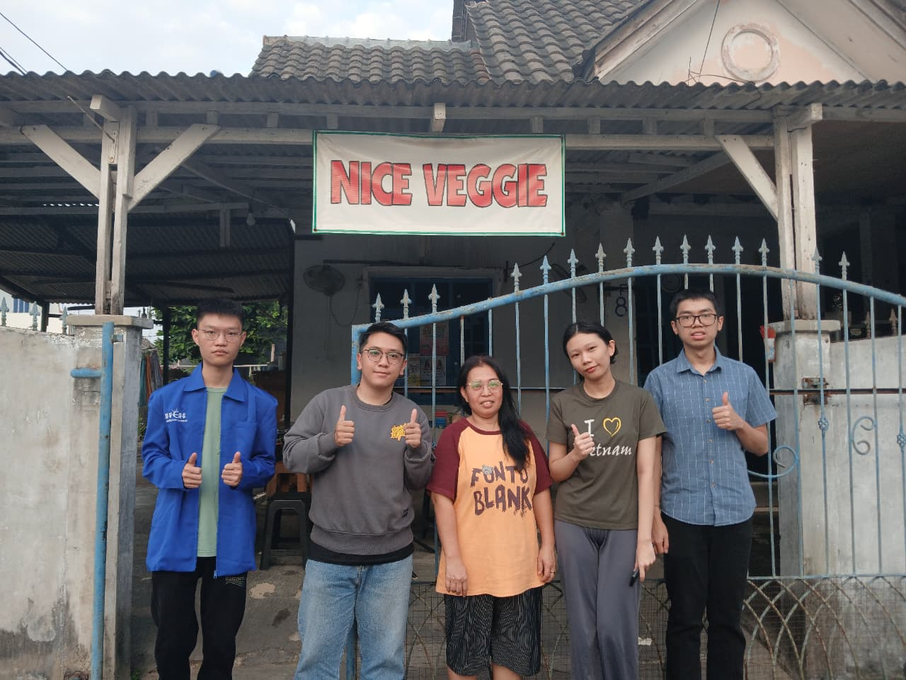

Nice Veggie merupakan usaha kuliner vegetarian rumahan yang telah berdiri selama lebih dari enam tahun dan berkomitmen menghadirkan makanan sehat, lezat, dan terjangkau.
Setiap menu diolah menggunakan bahan pilihan yang higienis, tanpa bahan hewani, namun tetap kaya rasa dan disukai berbagai kalangan.
Ciri khas Nice Veggie terletak pada sambalnya yang memiliki rasa unik dan menjadi favorit pelanggan setia.